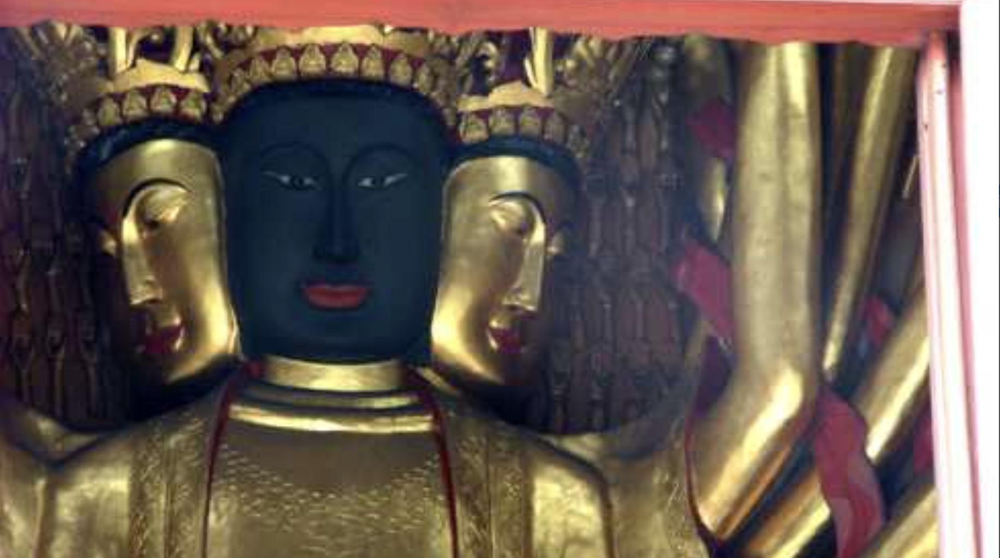

人文历史
黑脸观音
黑脸观音位于方山云峰寺内，是方山最负盛名的文化符号。不同于常见的金身或白玉观音，这尊观音像面部呈现神秘的黑色，香火极盛。云峰寺里有全国唯一的「黑脸观音」，每年观音生日，都有人拜祭求子。
游玩小贴士
- 最佳参拜时间：清晨 08:00 - 10:00
- 建议穿着：舒适的登山鞋，服装庄重
- 周边推荐：泸州老窖景区，张坝桂圆林公园
游客评价
Happy_Lin ★★★★★ 真的很灵验！黑脸观音必拜。带爸妈来的，他们说这就是想要的心灵休息。
静心 ★★★★★ 黑脸观音和云峰寺都去了，不虚此行。